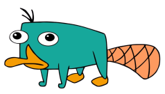

Pedagogical Tool for Defeasible Reasoning
An interactive learning environment to explore defeasible reasoning algorithms through step-by-step explanations, visualisations, and examples.
> step through Rational Closure
A debugger for defeasible reasoning
The PDR Tool explains defeasible reasoning algorithms by letting you step through each algorithm's process. Every step comes with an explanation and a visualisation of what is happening in the background, rather than just the final answer.
Enter your own knowledge base and query, choose an algorithm, and move forwards and backwards through its execution, the same way you would with a debugger.
From classical logic to defeasible reasoning
Propositional logic
Propositional logic represents knowledge using simple statements called atoms, such as platypus ("is a platypus") or hat ("wears a hat"), joined by connectives like ¬ (not), ∧ (and), ∨ (or) and → (implies). A knowledge base is a set of these statements.
e.g. perry → platypus means "Perry is a platypus".
Classical reasoning
A conclusion is entailed when it is true in every situation where the knowledge base is true. Classical reasoning is monotonic: adding new information can never take a conclusion back, so it cannot handle exceptions.
e.g. If platypuses never wear hats but Perry does, the only consistent answer is that Perry doesn't exist.
Defeasible reasoning
Defeasible reasoning adds "typically", written α |∼ β. Conclusions are tentative and can be overridden by more specific information. The KLM framework (Kraus, Lehmann and Magidor, 1990) gives it a formal foundation.
e.g. platypus |∼ ¬hat and perry |∼ hat: Perry is simply an exceptional platypus.

platypus |∼ ¬hatPlatypuses typically don't wear hatsperry |∼ hatPerry typically doesThe three algorithms
Rational Closure
Ranks statements from most general to most specific, then removes whole ranks until the conflict is gone. Simple and cautious, but it can remove unrelated information too: the drowning problem.
Lehmann & Magidor, 1992Lexicographic Closure
Builds on Rational Closure, but instead of removing a whole rank it tries smaller and smaller groups of its statements, and keeps the largest ones that no longer cause a conflict. This "weakens" the rank rather than discarding it.
Lehmann, 1995Relevant Closure
Finds the statements that are actually responsible for the conflict (its justifications) and only removes those.
Casini, Meyer, Moodley & Nortjé, 2014Project Aims
PDR is built to help students understand how defeasible reasoning algorithms reach their conclusions, not just what they conclude.
Make the reasoning visible
Let learners step through Rational, Lexicographic and Relevant Closure one step at a time, like a debugger, instead of only seeing the final answer.
Explain every step
Pair each step with a plain-language explanation and the matching line of pseudocode, so it is always clear what the algorithm is doing and why.
Show how the algorithms differ
Run the same knowledge base and query through each algorithm side by side, making differences like the drowning problem easy to see.
What you can do with PDR
Step-through execution
Move forward and back through each algorithm one step at a time.
BaseRank view
Watch the knowledge base split into ranks, from most general to most specific.
Three closures
Rational, Lexicographic and Relevant Closure, all in one tool.
Pseudocode tracking
The current line of pseudocode is highlighted alongside each explanation.
Comparison mode
Run one query through every algorithm and compare the results side by side.
Justifications
Open "Show Details" to see exactly which statements cause a conflict.
Your own examples
Enter any knowledge base and query, with syntax checking as you type.
Tutorial & glossary
A guided tutorial and glossary of key terms for first-time users.

See defeasible reasoning, one step at a time
The PDR Tool is on GitHub. Clone the repository, run it locally, and step through exactly how each algorithm reaches its answer.
View on GitHub